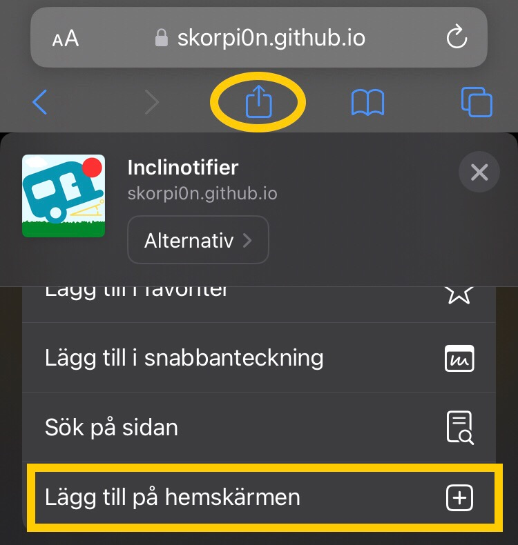

Looks like you're not on an mobile device!
Scan this QR code to open it in your mobile device
Scan this QR code to open it in your mobile device
If you like this Web App, please
And share it by letting
others scan this QR-code
Looks like you're neither on a iOS or Android device
If this is incorrect, report issue at GitHub with copied text from the debug view (</>)
If this is incorrect, report issue at GitHub with copied text from the debug view (</>)
For Inclinotifier to work, you need to add it to your Home Screen.

- Z-axis: 0°
- Z-Distance: 0mm
- X-axis: 0°
- X-Distance: 0mm